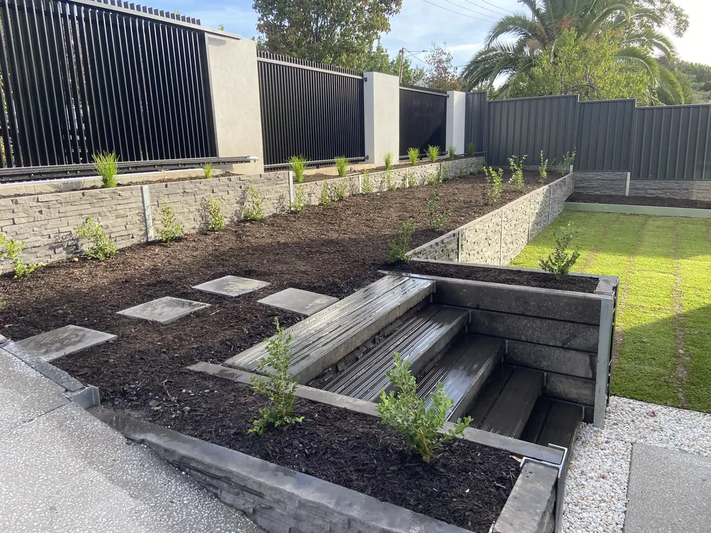

Home / Our Process
Our Process
Four steps on the surface, ten build stages underneath — so you always know exactly where your Adelaide project is up to.
The same four steps, every job
Front yard refresh or a full rebuild, the path is identical. Nothing gets handed between trades and lost along the way.
The photos above are real NextLevel work, used here to illustrate each step — they are not photographs of the steps themselves. Dedicated step photography (a site consultation, the crew mid-build, a handover) would be stronger, and can be dropped straight in when the client supplies it.
What each step actually involves
The short version is above. Here is what happens on your property, in order.
Ten stages, and you can watch yours move
Every build runs through the same ten stages. We track your job against them as it goes, and publish where it is up to — so you can see the progress without having to ring and ask.
No other landscaper in Adelaide does this. Our live jobs are on the site right now, each one showing its current stage and the latest update from site.
Step one starts with a conversation
Tell us about your space and we will come out, walk it with you and put a free quote together — no obligation.
How we work with builders, councils and project teams
Commercial work runs to your procurement process, not ours. Whether you invite us to tender, request a quote or want early input on a design, you get a clear price, the documents you need, and one point of contact from first enquiry to the end of the defects period.
Ways to engage us
- 01
Invite us to tender
Send your RFQ, RFT or EOI documents and we'll respond within your timeframe, complete and compliant.
- 02
Request a quote
For smaller packages or direct engagement, we'll inspect the site and provide an itemised quote.
- 03
Add us to your panel or platform
We're set up for supplier prequalification and can complete your onboarding requirements.
- 04
Involve us early
Our in-house landscape architect can help develop the design, budget and staging before you go to market.
Our commercial process
Have a tender, EOI or package to price?
Send us your documents or tell us about the project. We'll confirm whether it's a fit and what we need from you.